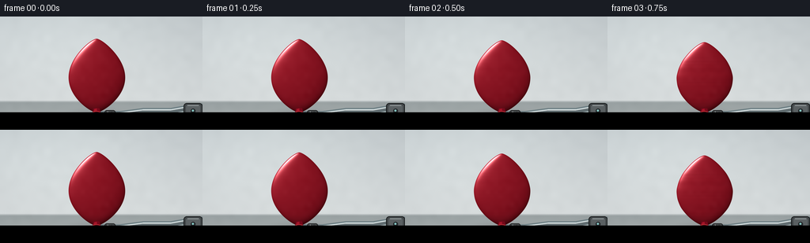
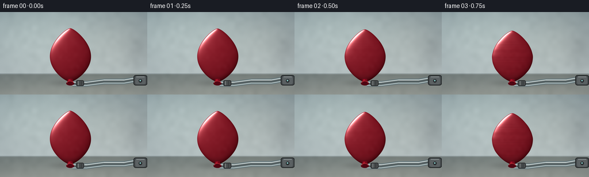
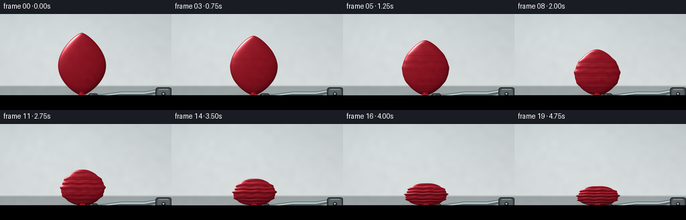
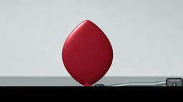
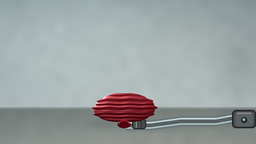
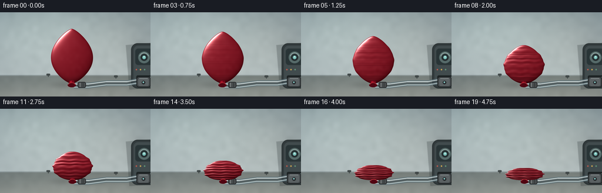
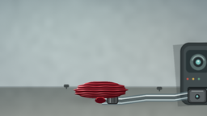
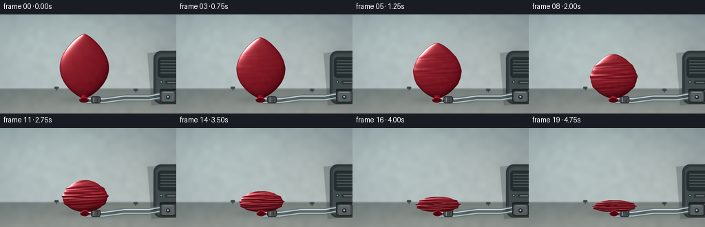
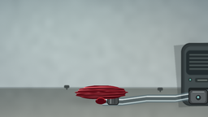
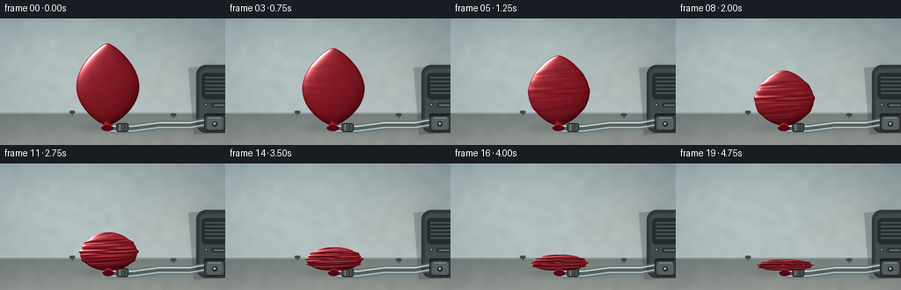

CODING AGENTS AS PIXEL WORLD MODELS
traex/DeepSeek-V4.1-Flash · mechanics_0024
点击播放 · 原生 RGB 像素
逐轮保存的候选
回放视频、检查图与代码变化。
每份候选均可单独播放。实际图片检查记录在下方工具轨迹中。
候选 01播放与检查图
点击播放 · 原生 RGB 像素

展开代码变化
--- 上一保存版本
+++ 本次保存版本
@@ -0,0 +1,349 @@
+from __future__ import annotations
+
+import math
+from pathlib import Path
+
+import numpy as np
+from PIL import Image, ImageDraw, ImageFilter
+
+from artifact_io import save
+
+
+ROOT = Path(__file__).resolve().parent
+WIDTH, HEIGHT, FRAMES, FPS = 256, 144, 20, 4.0
+SS = 4
+W, H = WIDTH * SS, HEIGHT * SS
+
+
+def smoothstep(edge0: float, edge1: float, value: np.ndarray | float):
+ t = np.clip((value - edge0) / (edge1 - edge0), 0.0, 1.0)
+ return t * t * (3.0 - 2.0 * t)
+
+
+def normalized(array: np.ndarray) -> np.ndarray:
+ length = np.sqrt(np.sum(array * array, axis=0, keepdims=True))
+ return array / np.maximum(length, 1e-6)
+
+
+def low_frequency_noise(rng: np.random.Generator) -> np.ndarray:
+ small = rng.normal(0.0, 1.0, (18, 32)).astype(np.float32)
+ encoded = np.clip(128.0 + small * 22.0, 0.0, 255.0).astype(np.uint8)
+ image = Image.fromarray(encoded, mode="L").resize((W, H), Image.Resampling.BICUBIC)
+ image = image.filter(ImageFilter.GaussianBlur(2.2 * SS))
+ noise = (np.asarray(image, dtype=np.float32) - 128.0) / 22.0
+ return noise / max(float(np.std(noise)), 1e-6)
+
+
+def render_background(rng: np.random.Generator) -> np.ndarray:
+ yy, xx = np.mgrid[0:H, 0:W].astype(np.float32)
+ x = xx / (W - 1)
+ y = yy / (H - 1)
+
+ wall_top = np.array([196.0, 203.0, 205.0], dtype=np.float32)
+ wall_bottom = np.array([218.0, 222.0, 222.0], dtype=np.float32)
+ wall = wall_top + (wall_bottom - wall_top) * y[..., None]
+
+ table_back = np.array([151.0, 159.0, 160.0], dtype=np.float32)
+ table_front = np.array([176.0, 182.0, 181.0], dtype=np.float32)
+ table_t = np.clip((y - 0.73) / 0.27, 0.0, 1.0)
+ table = table_back + (table_front - table_back) * table_t[..., None]
+
+ horizon = 0.748
+ blend = smoothstep(horizon - 0.009, horizon + 0.015, y)[..., None]
+ image = wall * (1.0 - blend) + table * blend
+
+ # Broad studio light from the upper left and a restrained vignette.
+ light = np.exp(-(((x - 0.22) / 0.48) ** 2 + ((y - 0.17) / 0.40) ** 2))
+ image += light[..., None] * np.array([11.0, 11.5, 11.0], dtype=np.float32)
+ vignette = np.clip(((x - 0.5) / 0.72) ** 2 + ((y - 0.52) / 0.84) ** 2, 0.0, 1.0)
+ image -= vignette[..., None] * np.array([8.0, 8.0, 7.0], dtype=np.float32)
+
+ noise = low_frequency_noise(rng)
+ image += noise[..., None] * 0.85
+ image += rng.normal(0.0, 0.42, (H, W, 1)).astype(np.float32)
+
+ # A quiet tabletop seam keeps the scene grounded without becoming a hard line.
+ seam = np.exp(-((y - horizon) / 0.0045) ** 2)
+ image -= seam[..., None] * np.array([7.0, 7.0, 6.5], dtype=np.float32)
+ return np.clip(image, 0.0, 255.0)
+
+
+def shadow_alpha(center_x: float, center_y: float, rx: float, ry: float, strength: float) -> np.ndarray:
+ yy, xx = np.mgrid[0:H, 0:W].astype(np.float32)
+ distance = ((xx - center_x * SS) / (rx * SS)) ** 2 + ((yy - center_y * SS) / (ry * SS)) ** 2
+ alpha = np.exp(-distance * 1.55) * strength
+ alpha_encoded = np.clip(alpha * 255.0, 0.0, 255.0).astype(np.uint8)
+ alpha_image = Image.fromarray(alpha_encoded, mode="L")
+ alpha_image = alpha_image.filter(ImageFilter.GaussianBlur(2.8 * SS))
+ return np.asarray(alpha_image, dtype=np.float32) / 255.0
+
+
+def draw_tube() -> tuple[Image.Image, Image.Image]:
+ tube = Image.new("RGBA", (W, H), (0, 0, 0, 0))
+ draw = ImageDraw.Draw(tube)
+ points = [
+ (126 * SS, 125 * SS),
+ (151 * SS, 125 * SS),
+ (181 * SS, 121 * SS),
+ (216 * SS, 121 * SS),
+ (244 * SS, 116 * SS),
+ (260 * SS, 115 * SS),
+ ]
+ draw.line(points, fill=(95, 115, 121, 185), width=10 * SS, joint="curve")
+ draw.line(points, fill=(187, 205, 208, 210), width=7 * SS, joint="curve")
+ draw.line(points, fill=(65, 80, 85, 155), width=4 * SS, joint="curve")
+
+ highlight_points = [(px, py - 2.1 * SS) for px, py in points]
+ draw.line(highlight_points, fill=(236, 244, 244, 185), width=round(1.2 * SS), joint="curve")
+
+ # Inline metal fitting near the frame edge.
+ draw.rounded_rectangle(
+ (232 * SS, 110 * SS, 256 * SS, 128 * SS),
+ radius=4 * SS,
+ fill=(67, 72, 74, 255),
+ outline=(28, 31, 32, 255),
+ width=1 * SS,
+ )
+ draw.rounded_rectangle(
+ (235 * SS, 112 * SS, 253 * SS, 126 * SS),
+ radius=3 * SS,
+ fill=(91, 97, 99, 255),
+ )
+ draw.line((237 * SS, 113 * SS, 251 * SS, 113 * SS), fill=(151, 158, 159, 220), width=1 * SS)
+ draw.ellipse((241 * SS, 117 * SS, 247 * SS, 123 * SS), fill=(42, 47, 49, 255), outline=(23, 25, 26, 255))
+ draw.ellipse((242.6 * SS, 118.3 * SS, 245.2 * SS, 120.9 * SS), fill=(132, 194, 190, 255))
+
+ # A small clamp where the hose meets the balloon neck.
+ draw.rounded_rectangle(
+ (132 * SS, 119 * SS, 146 * SS, 129 * SS),
+ radius=3 * SS,
+ fill=(73, 77, 78, 255),
+ outline=(36, 38, 39, 255),
+ width=1 * SS,
+ )
+ draw.line((136 * SS, 120.5 * SS, 136 * SS, 127.5 * SS), fill=(152, 157, 157, 210), width=1 * SS)
+ draw.line((141 * SS, 120.5 * SS, 141 * SS, 127.5 * SS), fill=(41, 44, 45, 220), width=1 * SS)
+
+ shadow = Image.new("L", (W, H), 0)
+ shadow_draw = ImageDraw.Draw(shadow)
+ shadow_points = [(px + 1.5 * SS, py + 3.0 * SS) for px, py in points]
+ shadow_draw.line(shadow_points, fill=75, width=7 * SS, joint="curve")
+ shadow = shadow.filter(ImageFilter.GaussianBlur(2.2 * SS))
+ return tube, shadow
+
+
+def balloon_geometry(progress: float) -> dict[str, float]:
+ e = float(smoothstep(0.0, 1.0, progress))
+ # The neck is anchored to the table while the body loses height and volume.
+ bottom = 122.0
+ height = 94.0 - 65.0 * e
+ top = bottom - height
+ width = 39.0 - 5.0 * e
+ center_x = 122.0 + 2.2 * e + 0.35 * math.sin(progress * math.pi * 2.0)
+ depth = 28.0 - 20.5 * e
+ return {
+ "e": e,
+ "top": top,
+ "bottom": bottom,
+ "width": width,
+ "center_x": center_x,
+ "depth": depth,
+ "progress": progress,
+ }
+
+
+def render_balloon(progress: float, latex_noise: np.ndarray) -> tuple[np.ndarray, np.ndarray]:
+ g = balloon_geometry(progress)
+ e = g["e"]
+ top, bottom = g["top"], g["bottom"]
+ center_x = g["center_x"]
+ base_width = g["width"]
+
+ yy, xx = np.mgrid[0:H, 0:W].astype(np.float32)
+ x = xx / SS
+ y = yy / SS
+ q = np.clip((y - top) / max(bottom - top, 1e-4), 0.0, 1.0)
+
+ profile = np.sin(np.pi * q) ** (0.68 - 0.31 * e)
+ profile *= 0.84 + 0.16 * q
+ crumple = 1.0 + e * (
+ 0.040 * np.sin(8.5 * np.pi * q + 0.8)
+ + 0.024 * np.sin(16.0 * np.pi * q + 1.7)
+ )
+ radius = base_width * profile * crumple
+ radius = np.maximum(radius, 0.0)
+
+ # A gentle lean makes the latex feel like a physical object rather than a symbol.
+ lean = (0.55 * np.sin(np.pi * q) + 1.0 * e * np.sin(2.0 * np.pi * q)) * (0.3 + 0.7 * q)
+ axis_x = center_x + lean
+ dx = x - axis_x
+ safe_radius = np.maximum(radius, 0.22)
+ cross = np.clip(1.0 - (dx / safe_radius) ** 2, 0.0, 1.0)
+
+ vertical_curve = np.sin(np.pi * q) ** 0.42
+ depth = g["depth"]
+ front = depth * vertical_curve * np.sqrt(cross)
+
+ # Wrinkles deepen as the rubber loses tension. Their normal perturbation is
+ # stronger than their color contribution, which keeps the surface coherent.
+ wrinkle_phase = (
+ 13.0 * np.pi * q
+ + 0.78 * np.sin(5.0 * np.pi * q)
+ + 0.46 * np.sin(3.2 * np.pi * dx / (base_width + 1e-4))
+ )
+ wrinkle_envelope = np.sqrt(cross) * np.sin(np.pi * q) ** 0.18
+ wrinkle = e * (1.35 + 0.45 * (1.0 - cross)) * np.sin(wrinkle_phase) * wrinkle_envelope
+ fine_wrinkle = e * 0.42 * np.sin(26.0 * np.pi * q + 2.3 * np.sin(7.0 * np.pi * q)) * wrinkle_envelope
+ height = front + wrinkle + fine_wrinkle
+
+ gy, gx = np.gradient(height)
+ normal = normalized(np.stack((-gx * 0.86, -gy * 0.86, np.ones_like(height)), axis=0))
+ nx, ny, nz = normal
+
+ light = normalized(np.array([-0.52, -0.66, 0.57], dtype=np.float32)[:, None, None])
+ half_vector = normalized(np.array([-0.31, -0.39, 0.87], dtype=np.float32)[:, None, None])
+ ndotl = np.clip(nx * light[0] + ny * light[1] + nz * light[2], 0.0, 1.0)
+ ndoth = np.clip(nx * half_vector[0] + ny * half_vector[1] + nz * half_vector[2], 0.0, 1.0)
+
+ base = np.array([169.0, 19.0, 37.0], dtype=np.float32)
+ dark = np.array([92.0, 8.0, 23.0], dtype=np.float32)
+ fill_color = np.array([188.0, 39.0, 52.0], dtype=np.float32)
+
+ diffuse = 0.31 + 0.72 * ndotl[..., None]
+ color = base * diffuse
+ color += fill_color * (0.10 * np.clip(1.0 - ndotl, 0.0, 1.0) ** 2)[..., None]
+ color = color * (1.0 - 0.20 * np.clip(-nx, 0.0, 1.0)[..., None]) + dark * (0.10 * np.clip(-nx, 0.0, 1.0)[..., None])
+
+ broad_sheen = np.power(ndoth, 8.0) * 0.13
+ sharp_glint = np.power(ndoth, 54.0) * 1.05
+ fresnel = np.power(np.clip(1.0 - nz, 0.0, 1.0), 2.2)
+ color += (broad_sheen + sharp_glint)[..., None] * np.array([255.0, 224.0, 216.0], dtype=np.float32)
+ color += fresnel[..., None] * np.array([84.0, 24.0, 24.0], dtype=np.float32)
+
+ # Fine latex variation and darker fold valleys.
+ color += latex_noise[..., None] * (1.4 + 1.6 * e)
+ fold_shadow = np.clip(-np.sin(wrinkle_phase), 0.0, 1.0) * e * 0.11 * wrinkle_envelope
+ color *= (1.0 - fold_shadow[..., None])
+ color *= (0.92 + 0.08 * np.clip(vertical_curve, 0.0, 1.0))[..., None]
+
+ # Soft contact occlusion at the bottom.
+ bottom_ao = smoothstep(bottom - 16.0 - 16.0 * e, bottom, y)
+ color *= (1.0 - 0.18 * bottom_ao)[..., None]
+
+ edge_px = radius * SS
+ edge_coverage = smoothstep(0.0, 1.45, edge_px - np.abs(dx) * SS)
+ top_coverage = smoothstep(0.0, 1.1, (y - top) * SS)
+ bottom_coverage = smoothstep(0.0, 1.1, (bottom - y) * SS)
+ alpha = edge_coverage * top_coverage * bottom_coverage
+ alpha *= (y >= top - 0.5) & (y <= bottom + 0.5)
+ return np.clip(color, 0.0, 255.0), np.clip(alpha, 0.0, 1.0)
+
+
+def draw_neck(progress: float) -> Image.Image:
+ g = balloon_geometry(progress)
+ e = g["e"]
+ cx = g["center_x"]
+ neck = Image.new("RGBA", (W, H), (0, 0, 0, 0))
+ draw = ImageDraw.Draw(neck)
+
+ # A short gathered neck and tie bridge the body into the extraction clamp.
+ half_top = 3.7 - 0.8 * e
+ half_bottom = 6.0 - 0.5 * e
+ top_y = 116.5 + 4.0 * e
+ bottom_y = 125.0
+ polygon = [
+ ((cx - half_top) * SS, top_y * SS),
+ ((cx + half_top) * SS, top_y * SS),
+ ((cx + half_bottom) * SS, bottom_y * SS),
+ ((cx - half_bottom) * SS, bottom_y * SS),
+ ]
+ draw.polygon(polygon, fill=(116, 11, 29, 255))
+ draw.polygon(
+ [
+ ((cx - half_top + 1.0) * SS, (top_y + 1.0) * SS),
+ ((cx + 0.3) * SS, (top_y + 0.4) * SS),
+ ((cx + 0.6) * SS, (bottom_y - 1.0) * SS),
+ ((cx - half_bottom + 1.2) * SS, (bottom_y - 1.0) * SS),
+ ],
+ fill=(164, 23, 42, 255),
+ )
+ draw.ellipse(
+ ((cx - half_bottom - 1.0) * SS, 121.0 * SS, (cx + half_bottom + 1.0) * SS, 128.0 * SS),
+ fill=(83, 8, 21, 255),
+ )
+ draw.arc(
+ ((cx - half_bottom) * SS, 120.0 * SS, (cx + half_bottom) * SS, 127.5 * SS),
+ 185,
+ 355,
+ fill=(192, 50, 57, 220),
+ width=1 * SS,
+ )
+ return neck
+
+
+def composite(base: np.ndarray, color: np.ndarray, alpha: np.ndarray) -> np.ndarray:
+ a = alpha[..., None]
+ return base * (1.0 - a) + color * a
+
+
+def render_frame(index: int, background: np.ndarray, tube: Image.Image, tube_shadow: Image.Image,
+ latex_noise: np.ndarray) -> np.ndarray:
+ progress = index / (FRAMES - 1)
+ g = balloon_geometry(progress)
+ e = g["e"]
+
+ frame = background.copy()
+
+ # The contact shadow broadens as the balloon settles onto the table.
+ shadow = shadow_alpha(
+ 124.5 + 2.0 * e,
+ 124.0,
+ 42.0 + 8.0 * e,
+ 5.2 + 1.0 * e,
+ 0.40 - 0.09 * e,
+ )
+ frame *= (1.0 - shadow[..., None] * np.array([0.36, 0.39, 0.38], dtype=np.float32))
+
+ tube_shadow_array = np.asarray(tube_shadow, dtype=np.float32)[..., None] / 255.0
+ frame *= (1.0 - 0.22 * tube_shadow_array)
+
+ tube_array = np.asarray(tube, dtype=np.float32)
+ tube_alpha = tube_array[..., 3:4] / 255.0
+ frame = frame * (1.0 - tube_alpha) + tube_array[..., :3] * tube_alpha
+
+ balloon, alpha = render_balloon(progress, latex_noise)
+ frame = composite(frame, balloon, alpha)
+
+ neck = draw_neck(progress)
+ neck_array = np.asarray(neck, dtype=np.float32)
+ neck_alpha = neck_array[..., 3:4] / 255.0
+ frame = frame * (1.0 - neck_alpha) + neck_array[..., :3] * neck_alpha
+
+ # A final tiny grade adds a little print-like contrast without shifting hue.
+ frame = (frame - 128.0) * 1.025 + 128.0
+ frame = np.clip(frame, 0.0, 255.0)
+ image = Image.fromarray(frame.astype(np.uint8), mode="RGB")
+ return np.asarray(image.resize((WIDTH, HEIGHT), Image.Resampling.LANCZOS), dtype=np.uint8)
+
+
+def main() -> None:
+ rng = np.random.default_rng(20261111)
+ background = render_background(rng)
+ tube, tube_shadow = draw_tube()
+
+ noise_small = rng.normal(0.0, 1.0, (28, 50)).astype(np.float32)
+ noise_encoded = np.clip(128.0 + noise_small * 22.0, 0.0, 255.0).astype(np.uint8)
+ noise_image = Image.fromarray(noise_encoded, mode="L").resize((W, H), Image.Resampling.BICUBIC)
+ noise_image = noise_image.filter(ImageFilter.GaussianBlur(1.3 * SS))
+ latex_noise = (np.asarray(noise_image, dtype=np.float32) - 128.0) / 22.0
+ latex_noise = np.clip(latex_noise * 0.85, -3.0, 3.0)
+
+ frames = [
+ render_frame(index, background, tube, tube_shadow, latex_noise)
+ for index in range(FRAMES)
+ ]
+ save(frames, ROOT)
+
+
+if __name__ == "__main__":
+ main()
候选 02播放与检查图
点击播放 · 原生 RGB 像素

展开代码变化
--- 上一保存版本
+++ 本次保存版本
@@ -39,12 +39,12 @@
x = xx / (W - 1)
y = yy / (H - 1)
- wall_top = np.array([196.0, 203.0, 205.0], dtype=np.float32)
- wall_bottom = np.array([218.0, 222.0, 222.0], dtype=np.float32)
+ wall_top = np.array([142.0, 157.0, 160.0], dtype=np.float32)
+ wall_bottom = np.array([188.0, 198.0, 198.0], dtype=np.float32)
wall = wall_top + (wall_bottom - wall_top) * y[..., None]
- table_back = np.array([151.0, 159.0, 160.0], dtype=np.float32)
- table_front = np.array([176.0, 182.0, 181.0], dtype=np.float32)
+ table_back = np.array([114.0, 123.0, 121.0], dtype=np.float32)
+ table_front = np.array([150.0, 155.0, 149.0], dtype=np.float32)
table_t = np.clip((y - 0.73) / 0.27, 0.0, 1.0)
table = table_back + (table_front - table_back) * table_t[..., None]
@@ -52,19 +52,25 @@
blend = smoothstep(horizon - 0.009, horizon + 0.015, y)[..., None]
image = wall * (1.0 - blend) + table * blend
- # Broad studio light from the upper left and a restrained vignette.
- light = np.exp(-(((x - 0.22) / 0.48) ** 2 + ((y - 0.17) / 0.40) ** 2))
- image += light[..., None] * np.array([11.0, 11.5, 11.0], dtype=np.float32)
+ # A soft pool of window light catches the backdrop and tabletop.
+ light = np.exp(-(((x - 0.23) / 0.47) ** 2 + ((y - 0.18) / 0.43) ** 2))
+ image += light[..., None] * np.array([23.0, 24.0, 21.0], dtype=np.float32)
+ warm_light = np.exp(-(((x - 0.84) / 0.31) ** 2 + ((y - 0.35) / 0.48) ** 2))
+ image += warm_light[..., None] * np.array([7.0, 4.0, 1.0], dtype=np.float32)
vignette = np.clip(((x - 0.5) / 0.72) ** 2 + ((y - 0.52) / 0.84) ** 2, 0.0, 1.0)
- image -= vignette[..., None] * np.array([8.0, 8.0, 7.0], dtype=np.float32)
+ image -= vignette[..., None] * np.array([18.0, 17.0, 14.0], dtype=np.float32)
noise = low_frequency_noise(rng)
- image += noise[..., None] * 0.85
- image += rng.normal(0.0, 0.42, (H, W, 1)).astype(np.float32)
+ image += noise[..., None] * 1.5
+ image += rng.normal(0.0, 0.65, (H, W, 1)).astype(np.float32)
# A quiet tabletop seam keeps the scene grounded without becoming a hard line.
seam = np.exp(-((y - horizon) / 0.0045) ** 2)
- image -= seam[..., None] * np.array([7.0, 7.0, 6.5], dtype=np.float32)
+ image -= seam[..., None] * np.array([15.0, 14.0, 12.0], dtype=np.float32)
+
+ # Out-of-focus shadows give the empty studio a real sense of depth.
+ blur_shadow = shadow_alpha(239.0, 66.0, 24.0, 38.0, 0.24)
+ image *= (1.0 - blur_shadow[..., None] * np.array([0.32, 0.32, 0.30], dtype=np.float32))
return np.clip(image, 0.0, 255.0)
@@ -164,7 +170,7 @@
y = yy / SS
q = np.clip((y - top) / max(bottom - top, 1e-4), 0.0, 1.0)
- profile = np.sin(np.pi * q) ** (0.68 - 0.31 * e)
+ profile = np.maximum(np.sin(np.pi * q), 0.0) ** (0.68 - 0.31 * e)
profile *= 0.84 + 0.16 * q
crumple = 1.0 + e * (
0.040 * np.sin(8.5 * np.pi * q + 0.8)
@@ -180,7 +186,7 @@
safe_radius = np.maximum(radius, 0.22)
cross = np.clip(1.0 - (dx / safe_radius) ** 2, 0.0, 1.0)
- vertical_curve = np.sin(np.pi * q) ** 0.42
+ vertical_curve = np.maximum(np.sin(np.pi * q), 0.0) ** 0.42
depth = g["depth"]
front = depth * vertical_curve * np.sqrt(cross)
@@ -191,7 +197,7 @@
+ 0.78 * np.sin(5.0 * np.pi * q)
+ 0.46 * np.sin(3.2 * np.pi * dx / (base_width + 1e-4))
)
- wrinkle_envelope = np.sqrt(cross) * np.sin(np.pi * q) ** 0.18
+ wrinkle_envelope = np.sqrt(cross) * np.maximum(np.sin(np.pi * q), 0.0) ** 0.18
wrinkle = e * (1.35 + 0.45 * (1.0 - cross)) * np.sin(wrinkle_phase) * wrinkle_envelope
fine_wrinkle = e * 0.42 * np.sin(26.0 * np.pi * q + 2.3 * np.sin(7.0 * np.pi * q)) * wrinkle_envelope
height = front + wrinkle + fine_wrinkle
@@ -205,20 +211,20 @@
ndotl = np.clip(nx * light[0] + ny * light[1] + nz * light[2], 0.0, 1.0)
ndoth = np.clip(nx * half_vector[0] + ny * half_vector[1] + nz * half_vector[2], 0.0, 1.0)
- base = np.array([169.0, 19.0, 37.0], dtype=np.float32)
- dark = np.array([92.0, 8.0, 23.0], dtype=np.float32)
- fill_color = np.array([188.0, 39.0, 52.0], dtype=np.float32)
+ base = np.array([151.0, 17.0, 34.0], dtype=np.float32)
+ dark = np.array([62.0, 7.0, 18.0], dtype=np.float32)
+ fill_color = np.array([185.0, 35.0, 47.0], dtype=np.float32)
diffuse = 0.31 + 0.72 * ndotl[..., None]
color = base * diffuse
color += fill_color * (0.10 * np.clip(1.0 - ndotl, 0.0, 1.0) ** 2)[..., None]
color = color * (1.0 - 0.20 * np.clip(-nx, 0.0, 1.0)[..., None]) + dark * (0.10 * np.clip(-nx, 0.0, 1.0)[..., None])
- broad_sheen = np.power(ndoth, 8.0) * 0.13
- sharp_glint = np.power(ndoth, 54.0) * 1.05
+ broad_sheen = np.power(ndoth, 7.0) * 0.18
+ sharp_glint = np.power(ndoth, 42.0) * 1.28
fresnel = np.power(np.clip(1.0 - nz, 0.0, 1.0), 2.2)
- color += (broad_sheen + sharp_glint)[..., None] * np.array([255.0, 224.0, 216.0], dtype=np.float32)
- color += fresnel[..., None] * np.array([84.0, 24.0, 24.0], dtype=np.float32)
+ color += (broad_sheen + sharp_glint)[..., None] * np.array([255.0, 230.0, 218.0], dtype=np.float32)
+ color += fresnel[..., None] * np.array([67.0, 17.0, 19.0], dtype=np.float32)
# Fine latex variation and darker fold valleys.
color += latex_noise[..., None] * (1.4 + 1.6 * e)
候选 03播放与检查图
候选 04播放与检查图
点击播放 · 原生 RGB 像素

展开代码变化
--- 上一保存版本
+++ 本次保存版本
@@ -138,13 +138,80 @@
return tube, shadow
+def draw_scene_details() -> Image.Image:
+ details = Image.new("RGBA", (W, H), (0, 0, 0, 0))
+ draw = ImageDraw.Draw(details)
+
+ # An out-of-focus metal extraction pump, cropped by the right edge. It gives
+ # the hose a plausible destination without competing with the balloon.
+ pump_shadow = [
+ (214 * SS, 56 * SS),
+ (256 * SS, 52 * SS),
+ (256 * SS, 130 * SS),
+ (220 * SS, 132 * SS),
+ ]
+ draw.polygon(pump_shadow, fill=(41, 49, 50, 64))
+ draw.rounded_rectangle(
+ (223 * SS, 53 * SS, 269 * SS, 130 * SS),
+ radius=11 * SS,
+ fill=(52, 60, 62, 255),
+ outline=(35, 42, 43, 255),
+ width=1 * SS,
+ )
+ draw.rounded_rectangle(
+ (227 * SS, 57 * SS, 264 * SS, 126 * SS),
+ radius=8 * SS,
+ fill=(67, 77, 79, 255),
+ )
+ draw.rounded_rectangle(
+ (230 * SS, 62 * SS, 259 * SS, 90 * SS),
+ radius=5 * SS,
+ fill=(44, 54, 56, 255),
+ )
+ draw.ellipse((235 * SS, 67 * SS, 255 * SS, 87 * SS), fill=(88, 108, 107, 255))
+ draw.arc((237 * SS, 69 * SS, 253 * SS, 85 * SS), 195, 345, fill=(164, 185, 180, 235), width=1 * SS)
+ draw.ellipse((239 * SS, 71 * SS, 251 * SS, 83 * SS), fill=(37, 45, 47, 255))
+ draw.ellipse((242 * SS, 74 * SS, 248 * SS, 80 * SS), fill=(123, 193, 187, 255))
+ draw.ellipse((244 * SS, 75 * SS, 246 * SS, 77 * SS), fill=(216, 239, 230, 255))
+
+ for px, py, color in [
+ (232, 98, (205, 83, 69)),
+ (239, 98, (225, 178, 75)),
+ (246, 98, (95, 158, 122)),
+ ]:
+ draw.ellipse(((px - 1.2) * SS, (py - 1.2) * SS, (px + 1.2) * SS, (py + 1.2) * SS), fill=color + (235,))
+
+ draw.rounded_rectangle(
+ (232 * SS, 108 * SS, 260 * SS, 116 * SS),
+ radius=2 * SS,
+ fill=(38, 45, 46, 255),
+ outline=(21, 26, 27, 255),
+ width=1 * SS,
+ )
+ draw.line((235 * SS, 111 * SS, 256 * SS, 111 * SS), fill=(113, 125, 124, 210), width=1 * SS)
+ draw.rounded_rectangle(
+ (233 * SS, 117 * SS, 258 * SS, 124 * SS),
+ radius=2 * SS,
+ fill=(85, 96, 96, 255),
+ )
+ draw.line((236 * SS, 118.5 * SS, 255 * SS, 118.5 * SS), fill=(169, 177, 171, 215), width=1 * SS)
+ draw.ellipse((241 * SS, 120 * SS, 249 * SS, 124 * SS), fill=(39, 46, 47, 255))
+
+ # Cable clips along the rear edge provide scale and visual order.
+ draw.rounded_rectangle((79 * SS, 105 * SS, 85 * SS, 108 * SS), radius=1 * SS, fill=(65, 73, 73, 255))
+ draw.line((82 * SS, 107 * SS, 82 * SS, 110 * SS), fill=(49, 57, 58, 230), width=1 * SS)
+ draw.rounded_rectangle((194 * SS, 108 * SS, 200 * SS, 111 * SS), radius=1 * SS, fill=(67, 74, 74, 255))
+ draw.line((197 * SS, 110 * SS, 197 * SS, 113 * SS), fill=(51, 59, 60, 230), width=1 * SS)
+ return details.filter(ImageFilter.GaussianBlur(0.34 * SS))
+
+
def balloon_geometry(progress: float) -> dict[str, float]:
e = float(smoothstep(0.0, 1.0, progress))
# The neck is anchored to the table while the body loses height and volume.
bottom = 122.0
- height = 94.0 - 65.0 * e
+ height = 94.0 - 73.0 * e
top = bottom - height
- width = 39.0 - 5.0 * e
+ width = 39.0 - 4.0 * e
center_x = 122.0 + 2.2 * e + 0.35 * math.sin(progress * math.pi * 2.0)
depth = 28.0 - 20.5 * e
return {
@@ -193,13 +260,13 @@
# Wrinkles deepen as the rubber loses tension. Their normal perturbation is
# stronger than their color contribution, which keeps the surface coherent.
wrinkle_phase = (
- 13.0 * np.pi * q
+ 15.0 * np.pi * q
+ 0.78 * np.sin(5.0 * np.pi * q)
+ 0.46 * np.sin(3.2 * np.pi * dx / (base_width + 1e-4))
)
wrinkle_envelope = np.sqrt(cross) * np.maximum(np.sin(np.pi * q), 0.0) ** 0.18
- wrinkle = e * (1.35 + 0.45 * (1.0 - cross)) * np.sin(wrinkle_phase) * wrinkle_envelope
- fine_wrinkle = e * 0.42 * np.sin(26.0 * np.pi * q + 2.3 * np.sin(7.0 * np.pi * q)) * wrinkle_envelope
+ wrinkle = e * (1.85 + 0.65 * (1.0 - cross)) * np.sin(wrinkle_phase) * wrinkle_envelope
+ fine_wrinkle = e * 0.55 * np.sin(30.0 * np.pi * q + 2.3 * np.sin(7.0 * np.pi * q)) * wrinkle_envelope
height = front + wrinkle + fine_wrinkle
gy, gx = np.gradient(height)
@@ -293,6 +360,7 @@
def render_frame(index: int, background: np.ndarray, tube: Image.Image, tube_shadow: Image.Image,
+ details: Image.Image,
latex_noise: np.ndarray) -> np.ndarray:
progress = index / (FRAMES - 1)
g = balloon_geometry(progress)
@@ -313,6 +381,10 @@
tube_shadow_array = np.asarray(tube_shadow, dtype=np.float32)[..., None] / 255.0
frame *= (1.0 - 0.22 * tube_shadow_array)
+ details_array = np.asarray(details, dtype=np.float32)
+ details_alpha = details_array[..., 3:4] / 255.0
+ frame = frame * (1.0 - details_alpha) + details_array[..., :3] * details_alpha
+
tube_array = np.asarray(tube, dtype=np.float32)
tube_alpha = tube_array[..., 3:4] / 255.0
frame = frame * (1.0 - tube_alpha) + tube_array[..., :3] * tube_alpha
@@ -336,6 +408,7 @@
rng = np.random.default_rng(20261111)
background = render_background(rng)
tube, tube_shadow = draw_tube()
+ details = draw_scene_details()
noise_small = rng.normal(0.0, 1.0, (28, 50)).astype(np.float32)
noise_encoded = np.clip(128.0 + noise_small * 22.0, 0.0, 255.0).astype(np.uint8)
@@ -345,7 +418,7 @@
latex_noise = np.clip(latex_noise * 0.85, -3.0, 3.0)
frames = [
- render_frame(index, background, tube, tube_shadow, latex_noise)
+ render_frame(index, background, tube, tube_shadow, details, latex_noise)
for index in range(FRAMES)
]
save(frames, ROOT)
候选 05播放与检查图

候选 06播放与检查图
点击播放 · 原生 RGB 像素

展开代码变化
--- 上一保存版本
+++ 本次保存版本
@@ -163,23 +163,15 @@
radius=8 * SS,
fill=(67, 77, 79, 255),
)
- draw.rounded_rectangle(
- (230 * SS, 62 * SS, 259 * SS, 90 * SS),
- radius=5 * SS,
- fill=(44, 54, 56, 255),
- )
- draw.ellipse((235 * SS, 67 * SS, 255 * SS, 87 * SS), fill=(88, 108, 107, 255))
- draw.arc((237 * SS, 69 * SS, 253 * SS, 85 * SS), 195, 345, fill=(164, 185, 180, 235), width=1 * SS)
- draw.ellipse((239 * SS, 71 * SS, 251 * SS, 83 * SS), fill=(37, 45, 47, 255))
- draw.ellipse((242 * SS, 74 * SS, 248 * SS, 80 * SS), fill=(123, 193, 187, 255))
- draw.ellipse((244 * SS, 75 * SS, 246 * SS, 77 * SS), fill=(216, 239, 230, 255))
-
- for px, py, color in [
- (232, 98, (205, 83, 69)),
- (239, 98, (225, 178, 75)),
- (246, 98, (95, 158, 122)),
- ]:
- draw.ellipse(((px - 1.2) * SS, (py - 1.2) * SS, (px + 1.2) * SS, (py + 1.2) * SS), fill=color + (235,))
+ draw.rounded_rectangle((229 * SS, 62 * SS, 261 * SS, 92 * SS), radius=5 * SS, fill=(38, 47, 49, 255))
+ for row in range(5):
+ y0 = (67 + row * 4.4) * SS
+ draw.line((233 * SS, y0, 258 * SS, y0), fill=(78, 89, 89, 220), width=1 * SS)
+ draw.line((233 * SS, y0 + 1 * SS, 258 * SS, y0 + 1 * SS), fill=(31, 39, 41, 210), width=1 * SS)
+ draw.ellipse((232 * SS, 96 * SS, 236 * SS, 100 * SS), fill=(42, 49, 50, 255), outline=(24, 28, 29, 255))
+ draw.ellipse((233 * SS, 97 * SS, 235 * SS, 99 * SS), fill=(109, 189, 171, 255))
+ draw.rounded_rectangle((240 * SS, 96 * SS, 258 * SS, 101 * SS), radius=1.5 * SS, fill=(45, 53, 54, 255))
+ draw.line((243 * SS, 98.5 * SS, 255 * SS, 98.5 * SS), fill=(130, 139, 134, 205), width=1 * SS)
draw.rounded_rectangle(
(232 * SS, 108 * SS, 260 * SS, 116 * SS),
@@ -209,11 +201,11 @@
e = float(smoothstep(0.0, 1.0, progress))
# The neck is anchored to the table while the body loses height and volume.
bottom = 122.0
- height = 94.0 - 73.0 * e
+ height = 94.0 - 77.0 * e
top = bottom - height
- width = 39.0 - 4.0 * e
+ width = 39.0 - 5.0 * e
center_x = 122.0 + 2.2 * e + 0.35 * math.sin(progress * math.pi * 2.0)
- depth = 28.0 - 20.5 * e
+ depth = 28.0 - 23.5 * e
return {
"e": e,
"top": top,
@@ -259,14 +251,20 @@
# Wrinkles deepen as the rubber loses tension. Their normal perturbation is
# stronger than their color contribution, which keeps the surface coherent.
+ lateral = dx / (base_width + 1e-4)
wrinkle_phase = (
- 15.0 * np.pi * q
- + 0.78 * np.sin(5.0 * np.pi * q)
- + 0.46 * np.sin(3.2 * np.pi * dx / (base_width + 1e-4))
+ 12.6 * np.pi * q
+ + 1.55 * np.sin(3.6 * np.pi * q + 0.7)
+ + 1.20 * np.sin(2.3 * np.pi * q + 3.1 * lateral)
+ + 0.72 * np.sin(7.2 * np.pi * q + 1.1)
)
wrinkle_envelope = np.sqrt(cross) * np.maximum(np.sin(np.pi * q), 0.0) ** 0.18
- wrinkle = e * (1.85 + 0.65 * (1.0 - cross)) * np.sin(wrinkle_phase) * wrinkle_envelope
- fine_wrinkle = e * 0.55 * np.sin(30.0 * np.pi * q + 2.3 * np.sin(7.0 * np.pi * q)) * wrinkle_envelope
+ crease_field = (
+ 0.73 * np.sin(wrinkle_phase)
+ + 0.27 * np.sin(23.0 * np.pi * q + 5.0 * lateral + 0.8 * np.sin(8.0 * np.pi * q))
+ )
+ wrinkle = e * (2.45 + 0.85 * (1.0 - cross)) * crease_field * wrinkle_envelope
+ fine_wrinkle = e * 0.62 * np.sin(28.0 * np.pi * q + 2.3 * np.sin(7.0 * np.pi * q) + 2.0 * lateral) * wrinkle_envelope
height = front + wrinkle + fine_wrinkle
gy, gx = np.gradient(height)
候选 07播放与检查图

候选 08播放与检查图
点击播放 · 原生 RGB 像素

展开代码变化
--- 上一保存版本
+++ 本次保存版本
@@ -201,11 +201,11 @@
e = float(smoothstep(0.0, 1.0, progress))
# The neck is anchored to the table while the body loses height and volume.
bottom = 122.0
- height = 94.0 - 77.0 * e
+ height = 94.0 - 81.0 * e
top = bottom - height
width = 39.0 - 5.0 * e
center_x = 122.0 + 2.2 * e + 0.35 * math.sin(progress * math.pi * 2.0)
- depth = 28.0 - 23.5 * e
+ depth = 28.0 - 25.0 * e
return {
"e": e,
"top": top,
可观测工具轨迹
实际执行的命令与返回图片。
命令 1exit 0
/bin/bash -c "pwd && rg --files -g 'prompt.txt' -g 'GENERATION_RULES.md' -g 'task_spec.json' -g '"'!node_modules'"'"
命令 2exit 0
/bin/bash -c "find . -maxdepth 2 -type f | sed 's#"'^./##'"' | sort | head -200"
命令 3exit 0
/bin/bash -c 'git status --short --branch'
命令 4exit 0
/bin/bash -c 'cat prompt.txt'
命令 5exit 0
/bin/bash -c 'cat GENERATION_RULES.md'
命令 6exit 0
/bin/bash -c 'cat task_spec.json'
命令 7exit 0
/bin/bash -c "sed -n '1,260p' artifact_io.py"
命令 8exit 1
/bin/bash -c 'python generate.py'
命令 9exit 1
/bin/bash -c 'python generate.py'
命令 10exit 1
/bin/bash -c 'python generate.py'
命令 11exit 0
/bin/bash -c 'python generate.py'
命令 12exit 0
/bin/bash -c 'python generate.py'
命令 13exit 0
/bin/bash -c 'python generate.py'
命令 14exit 0
/bin/bash -c 'python generate.py'
命令 15exit 0
/bin/bash -c 'python generate.py'
命令 16exit 0
/bin/bash -c "python - <<'PY'
import json
from pathlib import Path
import numpy as np
from PIL import Image
root=Path('.')
spec=json.loads(Path('task_spec.json').read_text())
z=np.load('pixels.npz')
print('pixels', z['pixels'].shape, z['pixels'].dtype)
print('frames', len(list(Path('frames').glob('*.png'))))
print('inspection', Image.open('inspection.png').size)
print('transition', Image.open('transition_check.png').size)
print('index_bytes', Path('index.html').stat().st_size)
print('expected', (spec['height'], spec['width'], spec['frames']))
PY"命令 17exit 0
/bin/bash -c 'git status --short -- .'
命令 18exit 0
/bin/bash -c 'ls -lh generate.py pixels.npz inspection.png transition_check.png index.html frames/00.png frames/19.png'
命令 19exit 0
/bin/bash -c "python - <<'PY'
from pathlib import Path
from PIL import Image
import numpy as np
files=sorted(Path('frames').glob('*.png'))
imgs=[np.asarray(Image.open(p).convert('RGB'),dtype=np.float32) for p in files]
diffs=np.array([np.abs(imgs[i]-imgs[i-1]).mean() for i in range(1,len(imgs))])
print('mean frame delta', round(float(diffs.mean()),3))
print('min/max frame delta', round(float(diffs.min()),3), round(float(diffs.max()),3))
print('black fraction', round(float(np.mean(np.asarray(Image.open(files[0])).max(axis=2)==0)),4))
PY"视觉工具实际返回图片 1

视觉工具实际返回图片 2

视觉工具实际返回图片 3

视觉工具实际返回图片 4

视觉工具实际返回图片 5

视觉工具实际返回图片 6

视觉工具实际返回图片 7

视觉工具实际返回图片 8

视觉工具实际返回图片 9

保存候选 8 份；完成命令 19 次；可验证图片返回 9 张。原始 API 响应与完整日志保留在本地。